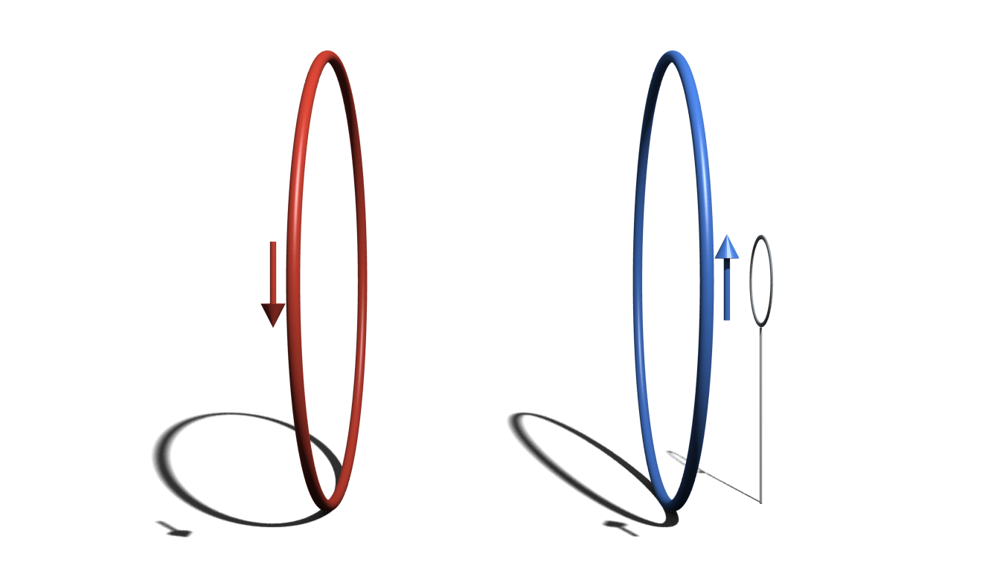
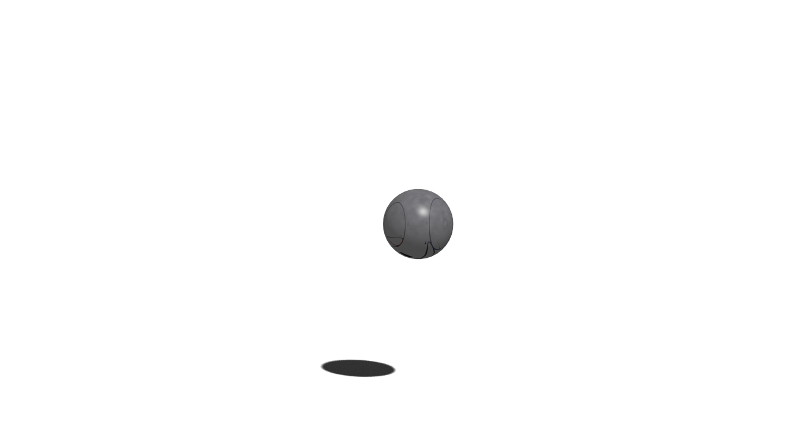

This is joint work with Johannes.
The paper will be on the arxiv soonish :)
Schrödinger's cat!
What else?
Macroscopic superpositions
Molecules, atomic gases, superconducting qubits, nanomechanics, …

Macroscopic Realism
Legget, Garg 1985
The world view that macroscopic physical properties
are independent of measurements.
Conditions for Macrorealism
1. Macrorealism
per se
A macroscopic object occupies
a definite macrostate at all times.
Conditions for Macrorealism
2. Noninvasive Measurements
It is possible to measure the state
without changing it (or the future evolution).
Conditions for Macrorealism
3. Arrow of time
4. Freedom of choice
Mathematical formulation?
A simple experiment
Macro-observable $Q = \pm 1$
Measurements at times $t_0, t_1, t_2$ with outcomes $Q_i$
Correlations $C_{ij} \equiv \langle Q_i Q_j\rangle = p_{++} + p_{--} - p_{+-} - p_{-+}$
Macrorealism =
Joint Probability Distribution
$$P(Q_0, Q_1, Q_2)$$
$$C_{01} = [P(+,+,+) + P(+,+,-)] \\+ [P(-,-,+) + P(-,-,-)] \\- [P(+,-,+) + P(+,-,-)] \\- [P(-,+,+) + P(-,+,-)] $$
$$C_{01} + C_{12} - C_{02} = 1 - 4[P(+,-,+) + P(-, +, -)]$$
Legget-Garg Inequality
$$C_{01} + C_{12} - C_{02} \leq 1$$
QM, qubit: $1.5$
QM, maximum: $3$
MR ⇒ LGI
… but not the other way
e.g. LGI cannot detect violations of MR
in a Mach-Zehnder with 50/50 beamsplitters
Joint Probability
$$P(Q_0, Q_1, Q_2)$$
Let's call it
$$P_{012}(Q_0, Q_1, Q_2)$$
Measurements matter!
$$P_{12}(Q_1, Q_2) \neq P_{012}(Q_1, Q_2)$$
More NSITs
$$\text{NSIT}_{(0)1}:~P_{1} = P_{01}$$
$$\text{NSIT}_{(1)2}:~P_{2} = P_{12}$$
$$\text{NSIT}_{(0)2}:~P_{2} = P_{02}$$
$$\text{NSIT}_{0(1)2}:~P_{02} = P_{012}$$
$$\text{NSIT}_{(0)12}:~P_{12} = P_{012}$$
Trivial: Arrow of time
$$\text{NSIT}_{0(1)}:~P_{0} = P_{01}$$
$$\text{NSIT}_{0(2)}:~P_{0} = P_{02}$$
$$\text{NSIT}_{1(2)}:~P_{1} = P_{12}$$
$$\text{NSIT}_{01(2)}:~P_{01} = P_{012}$$
Revisiting LGI
$$C_{01} + C_{12} - C_{02} \leq 1$$
$$C_{01} \rightarrow C_{01(2)}$$
$$C_{12} \rightarrow C_{(0)12}$$
$$C_{02} \rightarrow C_{0(1)2}$$
LGI from NSIT
$$C_{01} + C_{12} - C_{02} \leq 1$$
$$\text{AoT}:~P_{01} = P_{012}$$
$$\text{NSIT}_{0(1)2}:~P_{02} = P_{012}$$
$$\text{NSIT}_{(0)12}:~P_{12} = P_{012}$$
Maroney, Timpson (2014)
We've only used 2,3
joint probabilitites
What about the
other NSITs?
NSITs
⇕
macrorealism012
NSIT(1)2 + NSIT0(1)2 + NSIT(0)12 + AoT ⇔ MR012